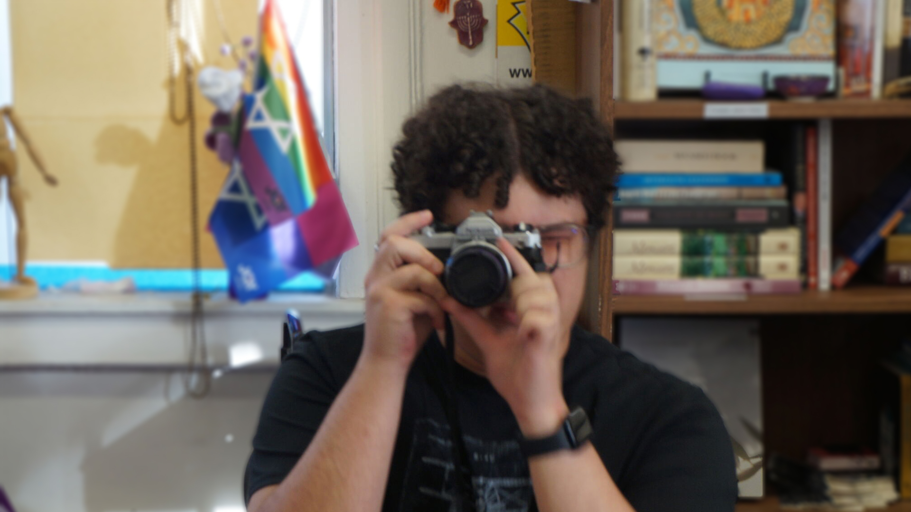

This photo is the field blur photo. I wanted the camera and the man behind it to be the main focus, but I wanted to make sure that everyhting else in the background was slightly visible as well. The pieces on the back all make up who the person in the forefront of the photo is.
